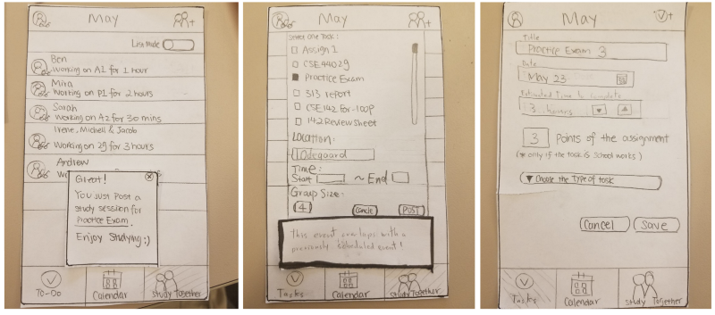

Time Man
Time Man
Introduction
Time Man is a mobile application that helps us address the design question, How can we help
college students efficiently organize their time as well as improve their time management
skills?
by enabling college students to organize assignments, events, and study groups using
integration with Canvas, Google calendars, and other work tools.
Our Roles
This mobile application is created by a group of four UW students:
Andrew Hu: UX Researcher/Designer and Web Programmer
Jacob Miller: UX Researcher/Designer and Web Programmer
Ziyue (Irene) Li: UX Researcher/Designer and UI Designer
Xin (Michelle) Gao: UX Researcher/Designer and UI Designer
Why do we care?
It is a serious problem that the majority of college students have poor time management skills. From freshmen who have not experienced the free college life to seniors who are overwhelmed by the impending pressure from the real world, college students often experience stress and anxiety caused by poor time management skills.
College life is beautiful, but it is not easy for students to keep track of the increased workload, social commitments, and for many work hours. Managing their works can be particularly difficult. Their busy and chaotic schedules cause a lot of stress. Students are required to use many different tools, such as calendars, to-do lists, Canvas, and etc to manage their time effectively. However, there is a lot of unnecessary work in manually copying and updating data between all of these tools and it’s possible to make mistakes, leading to disorganization and even missed assignments.
Our Goal
Therefore, our goal with this project is to make this process easier and less stressful for college students to manage their time and provide a less intrusive way to incentivize them keep on track of their tasks/assignments.
UX Research
We wanted to hear from college students to understand their existing workflows. In particular, we were curious to hear from students who had previously used a time management tool to find out what successes to build on and what pitfalls we could avoid.
Step 1: Survey

We started out with a survey which we posted on various UW internet spaces and shared with our classmates.
Our main goals were to understand the participants’ workflows, so that we could augment their current efforts and reduce or eliminate the tasks that are difficult for the users as opposed to what most time management apps do: force the user to manage their time the way the developers believe they should rather than the way that people actually do. This mistake causes many people to stop using apps and we wanted to avoid that problem.
After analyzing the survey data, we had a basic understanding of our users:
- the majority of students do not plan more than 1–2 days in advance
- being “too pushy” is one reason why students stop using the time management apps
We were also very interested in users’ previous pros and cons experience on using specific time management tools, however, we didn’t get a lot of specific data through a survey. Therefore, we opted to do interview studies to get more details about how students use tools in their workflow.
Step 2: Semi-structured Interviews
The interview study was conducted with 4 undergraduate UW college students. We asked them to talk about how they plan their schedule and then adapted questions to find out more about their workflow and their past experiences with time management tools. From this, we were able to understand two key ideas.
First, students generally use a combination of Canvas plus a calendar and/or a to-do list to effectively manage their time. Second, many students use study groups as a way to increase their productivity and collaborate on assignments. These insights heavily guided our design, leading to a tool which integrates these three tasks:
- Planning and visualizing the schedule with a smart calendar
- Prioritizing tasks with a task list
- Forming/finding study groups
UX/UI Research
Based on what we found, we used paper prototypes to convey our initial design ideas.
Step 3: Initial Paper Prototypes

Our initial design ideas had undergone major alterations and refinements through the heuristic analysis from classmates and usability testing.
Step 4: Heuristic Analysis
To increase the visibility of the systems state and provide more information to the user, as shown in Figure 4, we highlighted the tab at the bottom that represents the current tab, calendar, tasks, and Study Together, and we added small temporary pop-ups to notify the users that they successfully added a task to their task list or calendar or joined or created a study group.
Step 5: Usability Testing
We conducted our usability test with the TA and other two UW undergraduate students. We chose TA as our first participant because he has experience designing interfaces and with the design process. The other two participants were random undergraduates that we found studying in Odegaard. We chose random students because we believe that random sampling would best represent our target user base.
Changes we had made based on TA’s feedback: To plan events in the short term by adding a daily view to the calendar. While we did add a daily view, we addressed the feedback slightly differently. We added a planning mode.

The other critical piece of feedback that we received was to better integrate the Study Together feature with the other components of the app. As a result, we decided to add buttons to the right side of every task .

During tests with students, we focused on what was intuitive for the users and what they either did not think to use or could not locate. As a result of the feedback we received from the tests, we revised our task creation form. We removed the points/grade element entirely since neither participant understood what it was and we added a link to the website the task came from. The most surprising finding was that the planning mode was not as intuitive as we believed it to be. Users did not realize that you could drag tasks onto the calendar to add events. Thus, we added small dialog boxes to help explain the less intuitive functionality to new users.
Step 6: Hi-Fi Mockup

When we transitioned from the paper prototype to the digital mockup we kept most of the elements from our prototype the same. There were obvious improvements to layouts and color schemes but the key functionality and appearance were mostly unchanged. However, there were two significant changes.

First, we added a map visualization to the group details page. Now whether the user selects a group from the list mode or map mode, they will be able to see where this group is located. And to add some fun to our app, we replaced the text box to the speech bubble;), conveying a sense of chatting with each other.
Second, we changed the workflow of joining a group starting from the task list. In the below paper prototype, you select the “Study Together” button from the button navigation bar and it takes you to the main page to select a group.

However, in our digital mockup, a list of the available groups is embedded in the “Tasks” details page. The user selects a group to view the details and can join. This way, the user can select a group based around this task, without leaving the “Tasks” tab.

This iterative process of analyzing and revising has greatly changed our design from its initial stages to our high fidelity prototype. This process has made our design more effective, more intuitive, and increased its overall quality.
Interaction Design
Interaction VideoProject Retrospective
College Students and Time Management Systems
One of the most interesting and surprising things we learned about college students through this process was students’ opinions on the current landscape of time management tools. Specifically, the fact that students spoke positively about time management systems they had used previously and then stopped using permanently. These applications were effective. They helped students perform better in school, students had more spare time using them, and students were less stressed. However, students still stopped using them. Despite us all being college students ourselves this still shocked us. When we began this project we believed that the other time management systems available fail because they were lacking something important or annoyed their users. Finding out this fact during our first round of research spurred us to conduct interviews to discover why. After conducting the interview portion of the research we learned that college students stopped using these effective tools because they were not easy to use. To obtain the level of functionality to be useful they require the user to spend a lot of time entering data and making various decisions. Students do not want to add yet another daily task to their already stressful schedules. Learning just how important it was to our users that they do not need to spend much time or effort to manage our time allowed us to design something that better addresses the specific needs of college students.
Constraints and Limitations
There were Four main constraints that we identified during our user research.
- The tool should not require large amounts of time or effort to use effectively.
- The tool should not be annoying or invasive.
- The tool should be accessible anywhere.
- The tool should integrate seamlessly with the tool students already use.
The first constraint was the most important. We decide to address this constraint primarily by automating the most tedious and common task that all time management systems share data entry. Our app automatically retrieves information about class times, office hours, and assignment information from the various websites college students must use for their classes and uses that information to populate a calendar with the corresponding events, place their assignments in a task list, and collect information on relevant study groups in the Study Together feature. We further reduced the effort students need to plan their schedule by including a “suggestions” feature that will generate study times and add them to the calendar all with a single tap. Later in development during the usability testing, we received feedback that indicated that we needed to make it easier to plan single days. To address this concern we added a planning feature (explained in greater detail above) that allowed users to plan today and the next day by dragging tasks from their task list onto the calendar. Most users only plan a single day in advance so the addition of the planning feature helps the app comply with this constraint.
One problem many currently available time management systems suffer from is that they constantly remind the user to do certain tasks at certain times by bombarding them with notifications or by penalizing them if they do not. Our research found that college students hate apps that constantly bother them to make them feel guilty. As a result, we designed Time Man to be a more passive and assistive tool. We did not include any punitive features and we did not add any push notifications.
We learned that college students wanted access to their planning tools where ever they were. Thus we designed Time Man to be a mobile application because nearly all college students have near constant access to their cellphones.
Designing our application to adhere to this constraint was a bit difficult. During our user research, we discovered that the most popular time management tools among college students were a simple to-do list and calendar. Using this insight we combined these two features with our original ideas into an all-inclusive system.
Roadmap and Impact
Time Man was originally designed specifically for University of Washington undergraduate college students. Looking towards the future Time Man could easily be expanded to encompass both the postgraduate community here at the University of Washington and other universities across the United States. The prevalence of overstressed and struggling college students is not a problem that only exists at the University of Washington. These and other similar issues affect college students everywhere and an extraordinary rate. A lack of well developed time management skills can seriously impact a students success in school leading to increased levels of stress and anxiety.
We believe that our application can help combat these problems. If successful, our application can help students manage their time better allowing them to complete assignments with confidence or receive help if they need it raising grades, plan social events with their friends, and feel more in control of their college experience. If students do not learn to effectively manage their time the problems they face in college with only plague them in their professional lives after they graduate. By assisting college students our application can help them learn this critical skill before the lack negatively affects their academics and their professional development.